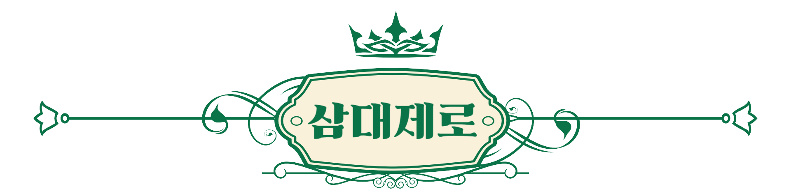

모아보기
기업 소개
고객 지원

삼대제로는 제로 칼로리 음료에 대한 정확한 정보와 과학적 분석을 제공하는 전문 기업입니다. 현대 소비자들은 건강을 위해 제로 음료를 선택하는 경우가 많지만, 그 속에 담긴 성분과 잠재적 부작용에 대해 충분한 정보를 얻기란 쉽지 않습니다. 우리는 이러한 소비자들의 니즈를 충족시키기 위해 설립되었습니다. 우리는 제로 음료에 포함된 주요 성분인 인공 감미료에 대한 과학적 분석 결과와 감미료의 사용처, 그리고 감미료의 발견 경로를 객관적인 데이터로 설명합니다. 동시에 과다 섭취 시 발생할 수 있는 부작용과 주의사항에 대해서도 과학적 근거를 바탕으로 투명하게 알려드립니다. 소비자들이 올바른 정보를 바탕으로 자신에게 맞는 음료를 선택할 수 있도록 돕는 것이 우리의 사명입니다. 지속적인 연구와 최신 트렌드 반영을 통해 신뢰할 수 있는 정보 제공의 선두주자가 되겠습니다.